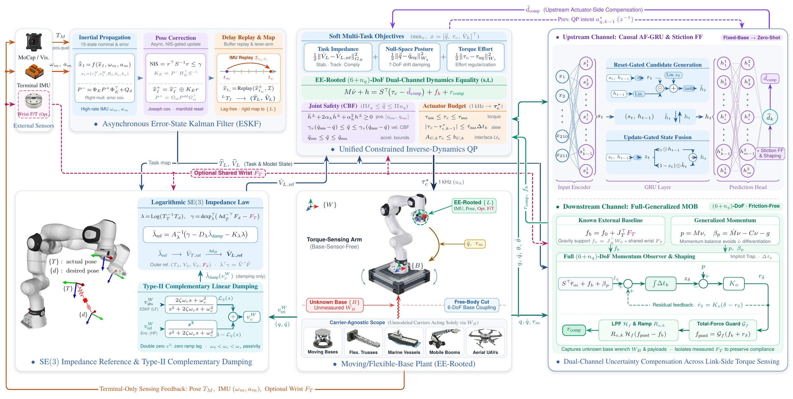

A manipulator that stays steady while its base moves. Run it live in your browser.
Same moving base, same free-standing glass of wine. The fixed-base controller assumes the base is still. Recorded from the in-browser simulator; the wine surface follows a first-mode sloshing model.
A free-standing wine glass stays level on a moving base.
Launch › 02A taiji symbol and a circle, traced under base motion.
Launch › 03Swing-up and balance of a pendulum on the end effector.
Launch › 04Compliant mating with a docking station on a moving base.
Launch › 05Two-way coupling with a 3.5 m cantilever beam.
Launch ›The whole-body dynamics are written from the end effector, so the controller needs only end-effector sensing and no measurement of the moving base.

An asynchronous error-state Kalman filter fuses end-effector pose and IMU into the task state, with lag-free delay replay.
An SE(3) impedance reference with complementary damping is realized by a single inverse-dynamics QP with joint-safety and actuator limits.
An upstream learned friction model and a downstream momentum observer absorb actuator-side and unknown base-side disturbances.